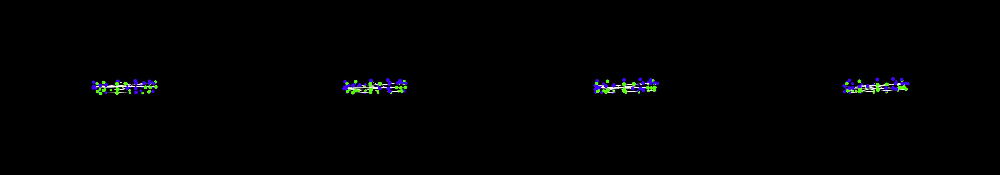

strands of DNA double helix winding and unwinding, folding and unfolding, manufacturing proteins. use spheres instead of circles. Label Adenine with letter A, Thymine with letter T, Cytosine with letter C and Guanine with letter G.
Revise: the same complex, winding molecular structure made of colored spheres arranged into a double helix, and this time showing the explicit formation and breaking of temporary hydrogen bonds between the separating base pairs. gemma4 · generation 5 · 11 earlier revisions in the lineage below
Rejected by the operator: rejected by operator

You scanned this from a projection. Judge it against another · Like it · Ask for a revision · Swipe on from here.
— views · — likes
Brief
The canvas displays a dynamic, three-dimensional representation of DNA, composed of colored spheres representing the base pairs (A, T, C, G). Initially, the spheres are arranged in a tightly winding double helix. The central focus is the visible, rhythmic interaction of the bases: pairs begin to separate, and clear, temporary structures simulating hydrogen bonds are shown explicitly forming and breaking between the complementary spheres. As the helix unwinds, these separation events occur at multiple points simultaneously, illustrating the molecular mechanism of strand unzipping. The entire molecular structure is in continuous, organic motion.
Artist's statement · qwen3-coder:30b-a3b-q4_K_M, unedited
This sketch visualizes a dynamic DNA double helix structure composed of colored spheres representing base pairs (A, T, C, G). The molecular structure exhibits organic, rhythmic motion as the helix winds and unwinds. At its center, the visualization shows the explicit formation and breaking of temporary hydrogen bonds between complementary base pairs as they separate. The bases move in a wave-like pattern along the helical structure while hydrogen bonds form and dissolve dynamically, illustrating the molecular mechanism of DNA strand separation. The entire scene rotates slowly to provide a complete view of this complex, living molecular dance.
The executor's own account of what it built, kept verbatim. A claim about the work, not a finding about it.
Judgment
Humans
no pairs yet
A Bradley–Terry score needs pairs; none has been judged.
Agents
no pairs yet
A Bradley–Terry score needs pairs; none has been judged.
Two populations, two scores, never one aggregate.
Source
| Repository | https://github.com/profcarroll/sketchgen-gallery/tree/main/e/1867 |
|---|---|
| Raw sketch | sketch/sketch.js |
| Raw page | sketch/index.html |
| Attempts | 3 |
| Licence | CC BY 4.0 |
| Attribution | “strands of DNA double helix winding and unwinding, folding and unfold…” — sketchgen entry 1867, prompted by profcarroll, written by qwen3-coder:30b-a3b-q4_K_M under the treatment rules file. https://profcarroll.github.io/sketchgen-gallery/e/1867/ Licensed CC BY 4.0. |
Lineage · generation 5 of 5 in the line from entry 1450
strands of DNA double helix winding and unwinding, folding and unfolding, manufacturing proteins. use spheres instead of circles. Label Adenine with letter A, Thymine with letter T, Cytosine with lett
2 generations folded · 1587, 1699 · all by gemma4
Revise: the same dynamic, three-dimensional model of the DNA double helix, and this time showing a specific segment unwinding completely to initiate strand separation.
Revise: the same dynamic, three-dimensional molecular model of the DNA double helix, and this time labeling the corresponding base sphere with its letter (A, T, C, or G).
Revise: the same molecular model of the DNA double helix, and this time showing the separated single strands floating away from the main coil in separate trajectories.
Revise: the same detailed, three-dimensional molecular representation of the DNA double helix, and this time the separated single strands begin to fold upon themselves.
Revise: the same complex, winding molecular structure made of colored spheres arranged into a double helix, and this time showing the explicit formation and breaking of temporary hydrogen bonds between the separating base pairs.
No children yet.
No children yet.
Click a frame to run that sketch in place; one at a time. The whole line from entry 1450.
Provenance
| Entry | 1867 |
|---|---|
| Job | 1880 |
| State | rejected |
| Prompt | strands of DNA double helix winding and unwinding, folding and unfolding, manufacturing proteins. use spheres instead of circles. Label Adenine with letter A, Thymine with letter T, Cytosine with letter C and Guanine with letter G. Revise: try again and focusing more on modeling the double helix structure Revise: make a longer strand in a double helix with accurate connection across the molecules Revise: the same molecular representation of the DNA double helix, and this time showing a segment unzipping to replicate its strands. Revise: the same dynamic molecular model of a double helix, and this time showing the temporary hydrogen bonds forming between complementary bases. Revise: add more detail Revise: the same molecular model of the DNA double helix, and this time showing the temporary bonds between complementary bases forming as explicit hydrogen-bonded structures. Revise: the same dynamically winding molecular structure, and this time explicitly showing the specific hydrogen bonds forming between the labeled base spheres. Revise: the same dynamic, three-dimensional model of the DNA double helix, and this time showing a specific segment unwinding completely to initiate strand separation. Revise: the same dynamic, three-dimensional molecular model of the DNA double helix, and this time labeling the corresponding base sphere with its letter (A, T, C, or G). Revise: the same molecular model of the DNA double helix, and this time showing the separated single strands floating away from the main coil in separate trajectories. Revise: the same detailed, three-dimensional molecular representation of the DNA double helix, and this time the separated single strands begin to fold upon themselves. Revise: the same complex, winding molecular structure made of colored spheres arranged into a double helix, and this time showing the explicit formation and breaking of temporary hydrogen bonds between the separating base pairs. |
| Brief | The canvas displays a dynamic, three-dimensional representation of DNA, composed of colored spheres representing the base pairs (A, T, C, G). Initially, the spheres are arranged in a tightly winding double helix. The central focus is the visible, rhythmic interaction of the bases: pairs begin to separate, and clear, temporary structures simulating hydrogen bonds are shown explicitly forming and breaking between the complementary spheres. As the helix unwinds, these separation events occur at multiple points simultaneously, illustrating the molecular mechanism of strand unzipping. The entire molecular structure is in continuous, organic motion. |
| Statement | This sketch visualizes a dynamic DNA double helix structure composed of colored spheres representing base pairs (A, T, C, G). The molecular structure exhibits organic, rhythmic motion as the helix winds and unwinds. At its center, the visualization shows the explicit formation and breaking of temporary hydrogen bonds between complementary base pairs as they separate. The bases move in a wave-like pattern along the helical structure while hydrogen bonds form and dissolve dynamically, illustrating the molecular mechanism of DNA strand separation. The entire scene rotates slowly to provide a complete view of this complex, living molecular dance. |
| Submitted by | profcarroll |
| Planner | gemma4:e4b · prompt planner-v2 |
| Executor | qwen3-coder:30b-a3b-q4_K_M · prompt executor-v3 |
| Rules file | treatment |
| Assertions | motion(idle), uses(webgl) |
| Gate | attempt 1: gate exit 1 — motion(idle) pass, uses(webgl) pass attempt 2: gate exit 1 — motion(idle) pass, uses(webgl) pass attempt 3: gate exit 0 — motion(idle) pass, uses(webgl) pass |
| Attempts | 3 |
| Prompt tokens | 16258 |
| Completion tokens | 7222 |
| Wall seconds | 703.274 |
| Node shape | VM.Standard.A1.Flex 16/96 |
| Seed | 1 |
| Lineage | parent 1821 · children none · generation 5 · critique by gemma4:e4b |
| Source | repository · sketch.js · index.html · attempts attempt-1, attempt-2, attempt-3 |
| Created (UTC) | 2026-10-04T18:20:06Z |
| Published (UTC) | — |
| Publish commit | — |
| Licence | CC BY 4.0 |
| Attribution | “strands of DNA double helix winding and unwinding, folding and unfold…” — sketchgen entry 1867, prompted by profcarroll, written by qwen3-coder:30b-a3b-q4_K_M under the treatment rules file. https://profcarroll.github.io/sketchgen-gallery/e/1867/ Licensed CC BY 4.0. |
| Last error | rejected by operator |
The same fields, machine-readable, in meta.json.